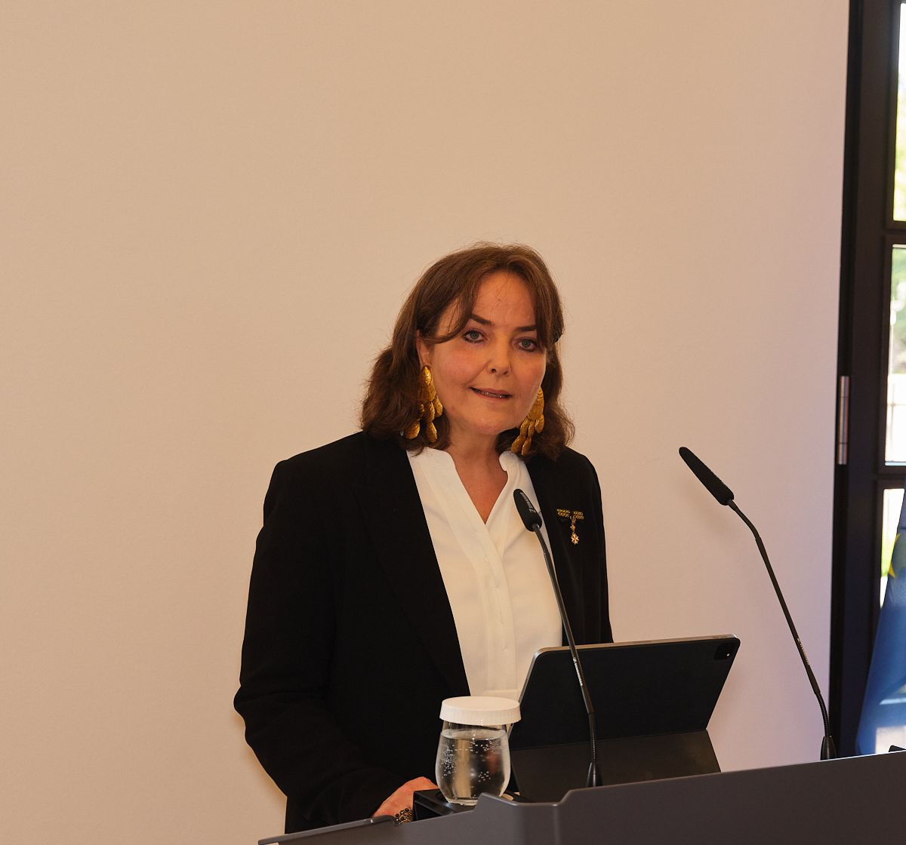

Coaching · Supervision · Organisationsberatung
Maßgeschneiderte Begleitung durch Veränderung – damit Entscheidungen tragen und Teams handlungsfähig bleiben.

Leistungen
Ich arbeite mit Führungskräften, Teams, Familienunternehmen und Organisationen, die vor Veränderungen stehen oder Orientierung suchen. Wählen Sie Ihren Bereich.
Klarheit in Rolle, Entscheidungen und Wirkung.
Ansehen → 02Rollen, Dynamiken und Zusammenarbeit klären.
Ansehen → 03Kulturelle Codes verstehen und sicher entscheiden.
Ansehen → 04Familie und Unternehmen in Einklang bringen.
Ansehen → 05Veränderungsprozesse nachhaltig begleiten.
Ansehen → 06Zwischen Ehrenamt und Hauptamt professionell führen.
Ansehen →Über mich
Coach, Organisationsberaterin und Supervisorin mit deutsch-französischem Hintergrund. Seit knapp 30 Jahren bewege ich mich zwischen zwei Kulturen, Sprachen und Denkweisen – und navigiere zwischen Sektoren, Hierarchien und Logiken.
Referenzen
Ich wollte partout nicht sehen, dass ich mich in der Mitte eines Machtkonflikts befand. Das Coaching hat mir ermöglicht, dies zu erkennen und damit klarzukommen.
Ich hatte kein genaues Ziel vor Augen und wusste nicht, wohin ich gehen wollte. Sie haben mir geholfen, klarer zu sehen.
Kontakt
In einem unverbindlichen Erstgespräch finden wir gemeinsam heraus, wie ich Sie unterstützen kann.
Erstgespräch vereinbaren